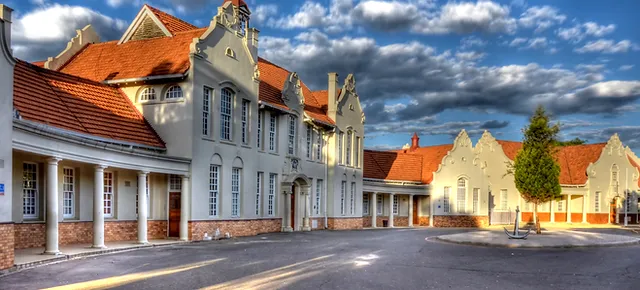

Education & Work Experience
CTU Training Solutions
Degree: Diploma in Programming Foundation
Location: Johannesburg, South Africa
Duration: February 2023 - November 2023
Kimberley Boys High School
Duration: 2018 - 2022
Location: Kimberley
The Subjects I studied for my Grade 10 - Grade 12 duration are as follows:
• English
• Mathematics
• Afrikaans
• Life Orientation
• Life Sciences
• Accounting
• Physical Sciences
I've finished my Matric at KBHS with these subjects, therefore I was able to get into CTU to study IT.
CTU

Duration: A full year studying Programming Foundation.
Location: Boksburg, Johannesburg
This is the educational institution where I'd like to take my studies to another level.
I plan on studying Software Development next year, then move onto AI & Machine Learning for my 3rd and final year!
Modules I've Worked on
• Cloud Fundamentals
• Computer Architecture
• Core Web Development
• Digital Literacy & Proficiency
• Ethics and Network Architecture
• Principle of Programme Design
• Programming with Python
• Robotic Development
Software Developer & Web Development for I&Z's Company
I have worked for I&Z, as they needed a website for their company. I took the challenge and did what was needed. I'm very grateful for getting the opportunity to experience how IT work really feels (working for a company). I've developed web applications using multiple software engines (e.g., JavaScript) to create websites that are responsive and user friendly. I benefited so much in this participation, I really enjoyed the experience!